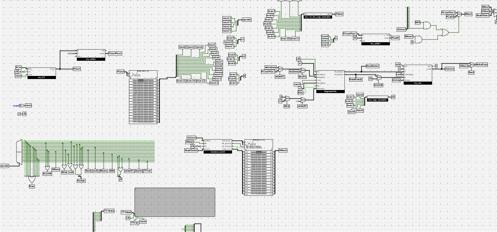

16-bit MIPS CPU
Overview
This project is a working 16-bit processor that I designed and built gate by gate in Logisim Evolution for Duke's Computer Architecture course. It implements the Duke 250/16 — a MIPS-like, word-addressed RISC architecture with a 16-instruction ISA — as a single-cycle machine, meaning every instruction is fetched, decoded, executed, and written back within one clock cycle. Starting from the architecture specification alone, I built the datapath, the control logic, and every arithmetic component from primitive gates, then debugged the whole machine by tracing real assembly programs through it. The finished CPU passes all eight of the course's automated test programs, covering arithmetic, boolean logic, shifting, memory access, control flow, recursion with a software-managed stack, and keyboard/TTY I/O.

The main circuit: program counter and instruction ROM (left), register file and ALU (right), control decoder and data memory (bottom).
The Architecture
The Duke 250/16 is a 16-bit, word-addressed architecture with eight general purpose registers, $r0 through $r7. Register $r0 is hardwired to zero, $r7 serves as the link register for function calls, and $r6 is used by convention as the stack pointer. It follows a Harvard model, with instruction memory in a ROM and data memory in a RAM, so instruction fetch and data access happen in the same cycle without conflicting. All sixteen instructions are 16 bits wide and fall into three formats:
| Format | Fields | Instructions |
|---|---|---|
| R-type | opcode (4), rs (3), rt (3), rd (3), shamt (3) | add, sub, not, xor, sll, srl, jr, input, output |
| I-type | opcode (4), rs (3), rt (3), immediate (6, signed) | addi, lw, sw, beqz, blt |
| J-type | opcode (4), address (12) | j, jal |
What I Built
ALU
A 16-bit ALU supporting addition, subtraction, XOR, NOT, and both shift directions, with a zero flag and a less-than result that the branch logic uses to resolve beqz and blt.
Adders
A one-bit full adder built from gates, chained into a 16-bit ripple-carry adder that serves both the ALU and the PC increment path.
Register File
Eight 16-bit registers with two read ports and one write port. Reads are driven by a decoder and tri-state buffers rather than a multiplexer, which is faster in a real implementation, and a write to $r0 is suppressed so it always reads zero.
Barrel Shifters
Separate left and right shifters built from multiplexer stages, combined into one shifter unit that handles sll and logical srl by the 3-bit shift amount.
Sign Extenders
Six-bit and twelve-bit sign extension units that widen I-type immediates and J-type addresses to the full 16-bit datapath width.
Program Counter
A PC register with asynchronous reset, plus the next-address logic that selects between PC+1, a branch target computed as PC+1+offset, a jump address, and a register value for jr.
How the Datapath Works
Each cycle begins with the program counter indexing the instruction ROM. The fetched word is split into its fields by bit position and the top four bits — the opcode — drive a decoder whose sixteen outputs are combined by a small network of OR gates into every control signal the datapath needs: which ALU operation to perform, whether the ALU's second operand comes from a register or a sign-extended immediate, which register the result is written to, whether the register file and data memory should write at all, whether the keyboard and TTY are enabled, and which of the four possible next addresses the PC should take. Because the control logic is purely combinational, the entire instruction completes in one cycle.
Timing had to be handled carefully: the register file and TTY are clocked on the rising edge while the PC, data memory, and keyboard are clocked on the falling edge, so that values written in one cycle are stable before the next fetch. Logisim Evolution's RAM also takes non-zero time to respond, so the data memory sits behind a memory latch that holds the address, data, and enable signals steady while the RAM settles.
Testing and Debugging
The CPU is verified by eight assembly programs run through Logisim's command-line simulator, which compares the contents of every register against expected values after a fixed number of cycles. Debugging a circuit this size is not something you can do by guessing — the productive loop was to write or read a small assembly program, run it through the provided instruction-set simulator to get the correct register trace, then single-step the same program in Logisim and compare register values cycle by cycle until the first divergence pointed at the faulty subcircuit.
| Test Program | What It Exercises | Result |
|---|---|---|
| simple | Basic instruction fetch, decode, and register writeback. | PASS |
| arithmetic | add, sub, and addi with signed immediates. |
PASS |
| boolean | not and xor across the full 16-bit width. |
PASS |
| shift | sll and logical srl by every shift amount. |
PASS |
| memory | lw and sw through the memory latch and RAM. |
PASS |
| control | beqz, blt, j, jal, and jr branch and jump targets. |
PASS |
| recurse | Recursive Fibonacci using the link register and a software-managed stack. | PASS |
| io | Non-blocking input from the keyboard and output to the TTY. |
PASS |
Sample Program
Below is the recursion test, written in Duke 250/16 assembly. It computes a Fibonacci number recursively, which means the CPU has to get function calls right end to end: saving the return address in $r7 before each call, pushing and popping callee-saved registers on a stack that the program manages itself, and returning through jr. This was the most demanding test of the design, since a single bug anywhere in the branch, memory, or register-write paths breaks it.
.text
# Compute fibonaccis using recursion
# We'll need some calling conventions to pull this off
# Registers:
# r0 zero
# r1 argument (like a#)
# r2 caller-saved (like t#)
# r3-4 callee-saved (like s#)
# r5 return value (like v#)
# r6 stack pointer (like sp)
# r7 return address (like ra)
# Calculate fib(5) (which, via recursion, will end up using fib(4)..fib(0))
main:
# Load the addr of stack pointer (32768 -- we'll pull this from memory)
la $r1, stack # get the address of the stack pointer from global memory
lw $r6, 0($r1) # set start of stack
addi $r1, $r0, 4 # set argument to 4
jal fib # r5 (return value) should be 5, as fib(4)==5
la $r1, result
sw $r5, 0($r1) # store the result into global memory
halt
fib:
addi $r6, $r6, -3 # reserve 3 words on stack (r6 is stack pointer, like $sp)
sw $r3, 0($r6) # save callee-saved regs r3,r4
sw $r4, 1($r6)
sw $r7, 2($r6) # save return address r7 (like $ra)
addi $r2, $r0, 2
blt $r1, $r2, _base_case # check base case of if f(n) = 0 or 1 return 1
# recursion case
add $r3, $r0, $r1 # r3 gets r1 (the argument) for safe keeping
addi $r1, $r1, -1 # set argument for recursion fib(n-1)
jal fib # do fib(n-1)
add $r4, $r0, $r5 # get answer into r4 for safe keeping
addi $r1, $r3, -2 # set argument for recursion fib(n-2)
jal fib # do fib(n-2)
add $r5, $r5, $r4 # sum fib(n-1) and fib(n-2) and put into our return value
j _return # goto return
# base case
_base_case:
addi $r5, $r0, 1 # base case for fib(0) or fib(1) is 1, set that return value
_return:
lw $r3, 0($r6) # restore callee-saved regs r3,r4
lw $r4, 1($r6)
lw $r7, 2($r6) # restore return address r7 (like $ra)
addi $r6, $r6, 3 # collapse stack frame (r6 is stack pointer, like $sp)
jr $r7 # return
.data
stack: .word 32767 # address of the top of the stack -- used for initializaiton
result: .word 0 # the answer will be stored here before the program ends
Built With
- Logisim Evolution — schematic capture and simulation of the processor, built only from wiring, gates, plexers, D flip-flops, ROM, RAM, and I/O primitives.
- Duke 250/16 assembly — the test and demo programs run on the finished CPU.
- Command-line simulation — automated register-level regression testing against expected output.